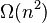
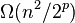
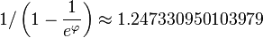

梳排序

使用梳排序为一列数字进行排序的过程
|
| 分类 |
排序算法 |
| 数据结构 |
阵列 |
| 最差时间复杂度 |
[1] |
| 最优时间复杂度 |
 |
| 平均时间复杂度 |
 其中p表示增量
(the number of increments)[1] |
| 最差空间复杂度 |
 |
|
|
梳排序（Comb sort）是一种由Wlodzimierz Dobosiewicz于1980年所发明的不稳定排序算法，并由Stephen Lacey和Richard Box于1991年四月号的Byte杂志中推广。梳排序是改良自泡沫排序和快速排序，其要旨在于消除乌龟，亦即在阵列尾部的小数值，这些数值是造成泡沫排序缓慢的主因。相对地，兔子，亦即在阵列前端的大数值，不影响泡沫排序的效能。
在泡沫排序中，只比较阵列中相邻的二项，即比较的二项的间距（Gap）是1，梳排序提出此间距其实可大于1，改自插入排序的希尔排序同样提出相同观点。梳排序中，开始时的间距设定为阵列长度，并在循环中以固定比率递减，通常递减率设定为1.3。在一次循环中，梳排序如同泡沫排序一样把阵列从首到尾扫描一次，比较及交换两项，不同的是两项的间距不固定于1。如果间距递减至1，梳排序假定输入阵列大致排序好，并以泡沫排序作最后检查及修正。
目录
[]
- 1 递减率
- 2 变异形式
- 2.1 梳排序-11
- 2.2 混合梳排序和其他排序算法
- 3 算法实现
- 3.1 算法
- 3.2 C语言
- 3.3 C++语言
- 3.4 Java语言
- 3.5 javascript语言
- 4 例
- 5 参考文献
- 6 参看
- 7 外部链接
递减率[]
递减率的设定影响着梳排序的效率，原作者以随机数作实验，得到最有效递减率为1.3的。如果此比率太小，则导致一循环中有过多的比较，如果比率太大，则未能有效消除阵列中的乌龟。
亦有人提议用作递减率，同时增加换算表协助于每一循环开始时计算新间距。
变异形式[]
梳排序-11[]
设定递减率为1.3时，最后只会有三种不同的间距组合：(9, 6, 4, 3, 2, 1)、(10, 7, 5, 3, 2, 1)、或 (11, 8, 6, 4, 3, 2, 1)。实验证明，如果间距变成9或10时一律改作11，则对效率有明显改善，原因是如果间距曾经是9或10，则到间距变成1时，数值通常不是递增序列，故此要进行几次泡沫排序循环修正。加入此指定间距的变异形式称为梳排序-11(Combsort11)。
混合梳排序和其他排序算法[]
如同快速排序和合并排序，梳排序的效率在开始时最佳，接近结束时，即进入泡沫排序时最差。如果间距变得太小时(例如小于10)，改用诸如插入排序或鸡尾酒排序等算法，则可提升整体效能。
此方法的最大好处是不再需要检查有否进行过交换程序以将排序循环提早结束。
算法实现[]
算法[]
梳排序程序（以array作輸入）
gap := array的長度//設定開始時的間距
一直迴圈至gap <= 1及swaps = 0
//更新間距
gap := 取「gap除以遞減率」的整數值
i := 0
swaps := 0 //用以檢查陣列是否已在遞增形式，只限gap=1時有效
//把輸入陣列「梳」一次
一直迴圈至i + gap >= array的長度 //從首到尾掃描一次
如果array[i] > array[i+gap]
把array[i]和array[i+gap]的數值交換
swaps := 1 // 曾作交換，故此陣列未必排序好
如果部分結束
i := i + 1
迴圈結束
迴圈結束
程序結束
C语言[]
void comb_sort(int arr[], int len) {
double shrink_factor = 0.801711847137793; //0.801711847137793 = 1 / 1.247330950103979
int gap = len, swapped = 1, i;
int temp;
while (gap > 1 || swapped) {
if (gap > 1)
gap *= shrink_factor;
swapped = 0;
for (i = 0; gap + i < len; i++)
if (arr[i] > arr[i + gap]) {
temp = arr[i];
arr[i] = arr[i + gap];
arr[i + gap] = temp;
swapped = 1;
}
}
}
C++语言[]
template<typename T> //整數或浮點數皆可使用，若要使用物件（class）時必須設定大於（>）的運算子功能
void comb_sort(T arr[], int len) {
double shrink_factor = 0.801711847137793; //0.801711847137793 = 1 / 1.247330950103979
int gap = len, swapped = 1, i;
T temp;
while (gap > 1 || swapped) {
if (gap > 1)
gap = (int) ((double) gap * shrink_factor);
swapped = 0;
for (i = 0; gap + i < len; i++)
if (arr[i] > arr[i + gap]) {
temp = arr[i];
arr[i] = arr[i + gap];
arr[i + gap] = temp;
swapped = 1;
}
}
}
Java语言[]
public static <E extends Comparable<? super E>> void sort(E[] input) {
int gap = input.length;
boolean swapped = true;
while (gap > 1 || swapped) {
if (gap > 1) {
gap = (int) (gap / 1.3);
}
int i = 0;
swapped = false;
while (i + gap < input.length) {
if (input[i].compareTo(input[i + gap]) > 0) {
E t = input[i];
input[i] = input[i + gap];
input[i + gap] = t;
swapped = true;
}
i++;
}
}
}
javascript语言[]
function combSort(list){
var len = list.length;
var gap = len;
var swapped = true;
while(gap > 1 || swapped){
if(gap > 1){
gap = Math.floor(gap / 1.3); //获取排序间隔
}
var i = 0;
swapped = false;
while(i + gap < len){
if(list[i] - list[i + gap] > 0){ //如果为正数，交换位置
var tmp = list[i];
list[i] = list[i + gap];
list[i + gap] = tmp;
swapped = true;
}
i++;
}
}
return list;
}
例[]
假设输入为
- 8 4 3 7 6 5 2 1
目标为将之变成递增排序。因为输入长度=8，开始时设定间距为8/1.3≒6，则比较8和2、4和1，并作交换两次。
- 8 4 3 7 6 5 2 1
- 2 4 3 7 6 5 8 1
- 2 1 3 7 6 5 8 4
第二次循环，更新间距为6/1.3≒4。比较2和6、1和5，直至7和4，此循环中只须交换一次。
- 2 1 3 7 6 5 8 4
- 2 1 3 4 6 5 8 7
接下来的每次循环，间距依次递减为3 → 2 → 1，
间距=3时，不须交换
- 2 1 3 4 6 5 8 7
间距=2时，不须交换
- 2 1 3 4 6 5 8 7
间距h=1时，交换三次
- 2 1 3 4 6 5 8 7
- 1 2 3 4 6 5 8 7
- 1 2 3 4 5 6 8 7
- 1 2 3 4 5 6 7 8
上例中，共作了六次交换以完成排序。